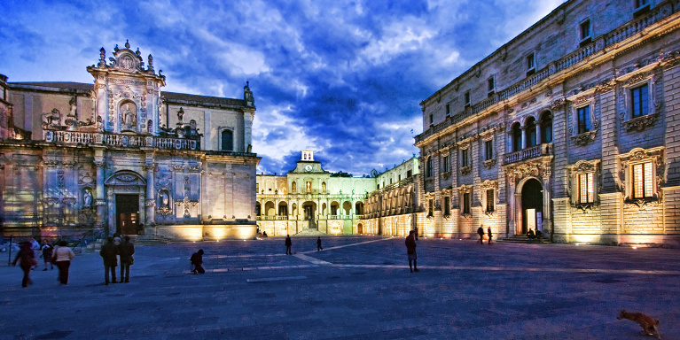

Лечче - город на юге Италии в регионе Апулия. Расположен на полуострове Салентина на самом краю "итальянского сапога" в месте, где соприкасаются воды Ионического и Адриатического морей, а высокие живописные скалы чередуются золотыми пляжами и лесами. Лечче - барочная жемчужина Италии. Это город, который называют "Флоренцией или Римом Юга". И если бы не его местоположение, то Лечче давно бы стал одним из самым популярных городов страны.
